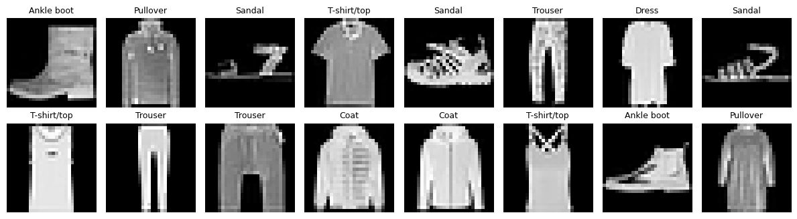
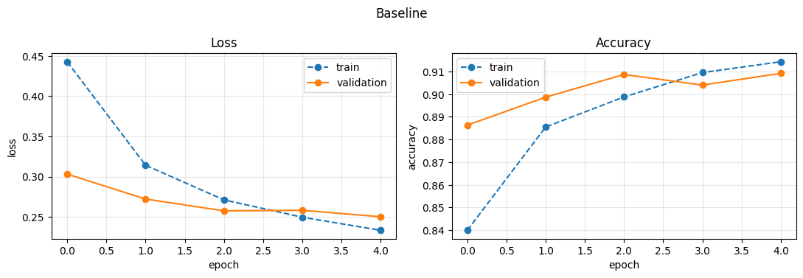
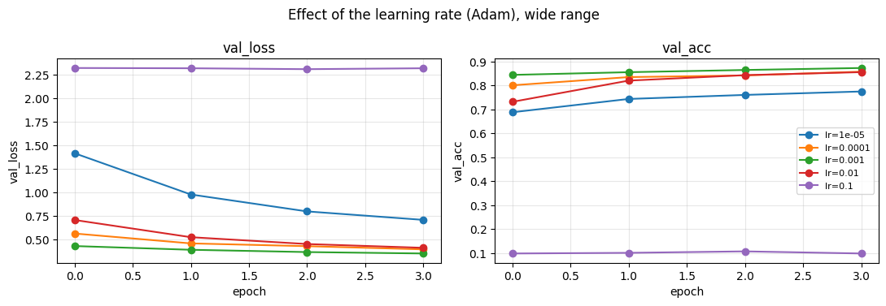

Hyperparameters in Deep Learning — a hands-on tour with PyTorch Lightning#
This notebook builds a small but complete image-classification framework on Fashion-MNIST and uses it to study hyperparameters: what they are, where they live in the code, and what happens when you change them.
What you will build
One
HParamsconfig object that holds every hyperparameter in one placeA
LightningDataModule(data), a CNN (nn.Module) and aLightningModule(training logic)A
fit()helper that trains a model from a config and returns its learning curvesControlled experiments: learning rate, batch size, optimizer, regularisation
A small random search, then one final evaluation on the test set
Parameters vs. hyperparameters
Parameters |
Hyperparameters |
|
|---|---|---|
What |
Weights and biases of the network |
Settings that define the model and how it is trained |
Who sets them |
The optimizer, by gradient descent |
You, before training starts |
Learned from |
Training data |
Validation performance (trial and comparison) |
Examples |
Conv kernels, linear weights |
Learning rate, batch size, dropout, number of layers |
A useful mental model: the optimizer searches for good parameters inside a search problem that the hyperparameters define. Bad hyperparameters make that inner problem hard or impossible, no matter how long you train.
0. Setup#
Uncomment the next cell if the packages are not installed yet (for example on a fresh Colab runtime).
%pip install torch torchvision lightning pandas matplotlib
Requirement already satisfied: torch in /usr/local/lib/python3.13/dist-packages (2.14.1+cu130)
Requirement already satisfied: torchvision in /usr/local/lib/python3.13/dist-packages (0.29.1+cu130)
Collecting lightning
Downloading lightning-2.6.6-py3-none-any.whl.metadata (45 kB)
Requirement already satisfied: pandas in /usr/local/lib/python3.13/dist-packages (2.2.3)
Requirement already satisfied: matplotlib in /usr/local/lib/python3.13/dist-packages (3.10.0)
Requirement already satisfied: filelock in /usr/local/lib/python3.13/dist-packages (from torch) (4.2.7)
Requirement already satisfied: typing-extensions>=4.10.0 in /usr/local/lib/python3.13/dist-packages (from torch) (4.16.0)
Requirement already satisfied: setuptools>=77.0.3 in /usr/local/lib/python3.13/dist-packages (from torch) (80.10.2)
Requirement already satisfied: sympy>=1.13.3 in /usr/local/lib/python3.13/dist-packages (from torch) (1.14.0)
Requirement already satisfied: networkx>=2.5.1 in /usr/local/lib/python3.13/dist-packages (from torch) (3.7)
Requirement already satisfied: jinja2 in /usr/local/lib/python3.13/dist-packages (from torch) (3.1.6)
Requirement already satisfied: fsspec>=0.8.5 in /usr/local/lib/python3.13/dist-packages (from torch) (2025.12.0)
Requirement already satisfied: cuda-toolkit==13.0.3 in /usr/local/lib/python3.13/dist-packages (from cuda-toolkit[cublas,cudart,cufft,cufile,cupti,curand,cusolver,cusparse,nvjitlink,nvrtc,nvtx]==13.0.3; platform_system == "Linux"->torch) (13.0.3.0)
Requirement already satisfied: cuda-bindings<14,>=13.0.3 in /usr/local/lib/python3.13/dist-packages (from torch) (13.0.3)
Requirement already satisfied: nvidia-cudnn-cu13==9.24.0.43 in /usr/local/lib/python3.13/dist-packages (from torch) (9.24.0.43)
Requirement already satisfied: nvidia-cusparselt-cu13==0.8.1 in /usr/local/lib/python3.13/dist-packages (from torch) (0.8.1)
Requirement already satisfied: nvidia-nccl-cu13==2.30.7 in /usr/local/lib/python3.13/dist-packages (from torch) (2.30.7)
Requirement already satisfied: nvidia-nvshmem-cu13==3.4.5 in /usr/local/lib/python3.13/dist-packages (from torch) (3.4.5)
Requirement already satisfied: triton~=3.8.0 in /usr/local/lib/python3.13/dist-packages (from torch) (3.8.0)
Requirement already satisfied: nvidia-cublas==13.1.1.3.* in /usr/local/lib/python3.13/dist-packages (from cuda-toolkit[cublas,cudart,cufft,cufile,cupti,curand,cusolver,cusparse,nvjitlink,nvrtc,nvtx]==13.0.3; platform_system == "Linux"->torch) (13.1.1.3)
Requirement already satisfied: nvidia-cuda-nvrtc==13.0.88.* in /usr/local/lib/python3.13/dist-packages (from cuda-toolkit[cublas,cudart,cufft,cufile,cupti,curand,cusolver,cusparse,nvjitlink,nvrtc,nvtx]==13.0.3; platform_system == "Linux"->torch) (13.0.88)
Requirement already satisfied: nvidia-cuda-runtime==13.0.96.* in /usr/local/lib/python3.13/dist-packages (from cuda-toolkit[cublas,cudart,cufft,cufile,cupti,curand,cusolver,cusparse,nvjitlink,nvrtc,nvtx]==13.0.3; platform_system == "Linux"->torch) (13.0.96)
Requirement already satisfied: nvidia-cufft==12.0.0.61.* in /usr/local/lib/python3.13/dist-packages (from cuda-toolkit[cublas,cudart,cufft,cufile,cupti,curand,cusolver,cusparse,nvjitlink,nvrtc,nvtx]==13.0.3; platform_system == "Linux"->torch) (12.0.0.61)
Requirement already satisfied: nvidia-nvjitlink<14,>=13.0.88 in /usr/local/lib/python3.13/dist-packages (from cuda-toolkit[cublas,cudart,cufft,cufile,cupti,curand,cusolver,cusparse,nvjitlink,nvrtc,nvtx]==13.0.3; platform_system == "Linux"->torch) (13.4.92)
Requirement already satisfied: nvidia-cufile==1.15.1.6.* in /usr/local/lib/python3.13/dist-packages (from cuda-toolkit[cublas,cudart,cufft,cufile,cupti,curand,cusolver,cusparse,nvjitlink,nvrtc,nvtx]==13.0.3; platform_system == "Linux"->torch) (1.15.1.6)
Requirement already satisfied: nvidia-cuda-cupti==13.0.85.* in /usr/local/lib/python3.13/dist-packages (from cuda-toolkit[cublas,cudart,cufft,cufile,cupti,curand,cusolver,cusparse,nvjitlink,nvrtc,nvtx]==13.0.3; platform_system == "Linux"->torch) (13.0.85)
Requirement already satisfied: nvidia-curand==10.4.0.35.* in /usr/local/lib/python3.13/dist-packages (from cuda-toolkit[cublas,cudart,cufft,cufile,cupti,curand,cusolver,cusparse,nvjitlink,nvrtc,nvtx]==13.0.3; platform_system == "Linux"->torch) (10.4.0.35)
Requirement already satisfied: nvidia-cusolver==12.0.4.66.* in /usr/local/lib/python3.13/dist-packages (from cuda-toolkit[cublas,cudart,cufft,cufile,cupti,curand,cusolver,cusparse,nvjitlink,nvrtc,nvtx]==13.0.3; platform_system == "Linux"->torch) (12.0.4.66)
Requirement already satisfied: nvidia-cusparse==12.6.3.3.* in /usr/local/lib/python3.13/dist-packages (from cuda-toolkit[cublas,cudart,cufft,cufile,cupti,curand,cusolver,cusparse,nvjitlink,nvrtc,nvtx]==13.0.3; platform_system == "Linux"->torch) (12.6.3.3)
Requirement already satisfied: nvidia-nvtx==13.0.85.* in /usr/local/lib/python3.13/dist-packages (from cuda-toolkit[cublas,cudart,cufft,cufile,cupti,curand,cusolver,cusparse,nvjitlink,nvrtc,nvtx]==13.0.3; platform_system == "Linux"->torch) (13.0.85)
Requirement already satisfied: cuda-pathfinder~=1.1 in /usr/local/lib/python3.13/dist-packages (from cuda-bindings<14,>=13.0.3->torch) (1.8.5)
Requirement already satisfied: numpy in /usr/local/lib/python3.13/dist-packages (from torchvision) (2.4.6)
Requirement already satisfied: pillow!=8.3.*,>=5.3.0 in /usr/local/lib/python3.13/dist-packages (from torchvision) (11.3.0)
Requirement already satisfied: PyYAML<8.0,>5.4 in /usr/local/lib/python3.13/dist-packages (from lightning) (6.0.3)
Collecting lightning-utilities<2.0,>=0.10.0 (from lightning)
Downloading lightning_utilities-0.15.3-py3-none-any.whl.metadata (5.5 kB)
Requirement already satisfied: packaging<27.0,>=23.0 in /usr/local/lib/python3.13/dist-packages (from lightning) (26.3)
Collecting torchmetrics<3.0,>0.7.0 (from lightning)
Downloading torchmetrics-1.9.0-py3-none-any.whl.metadata (23 kB)
Requirement already satisfied: tqdm<6.0,>=4.57.0 in /usr/local/lib/python3.13/dist-packages (from lightning) (4.67.3)
Collecting pytorch-lightning (from lightning)
Downloading pytorch_lightning-2.6.6-py3-none-any.whl.metadata (21 kB)
Requirement already satisfied: aiohttp!=4.0.0a0,!=4.0.0a1 in /usr/local/lib/python3.13/dist-packages (from fsspec[http]<2028.0,>=2022.5.0->lightning) (3.14.5)
Requirement already satisfied: python-dateutil>=2.8.2 in /usr/local/lib/python3.13/dist-packages (from pandas) (2.9.0.post0)
Requirement already satisfied: pytz>=2020.1 in /usr/local/lib/python3.13/dist-packages (from pandas) (2025.2)
Requirement already satisfied: tzdata>=2022.7 in /usr/local/lib/python3.13/dist-packages (from pandas) (2026.6)
Requirement already satisfied: contourpy>=1.0.1 in /usr/local/lib/python3.13/dist-packages (from matplotlib) (1.4.0)
Requirement already satisfied: cycler>=0.10 in /usr/local/lib/python3.13/dist-packages (from matplotlib) (0.12.1)
Requirement already satisfied: fonttools>=4.22.0 in /usr/local/lib/python3.13/dist-packages (from matplotlib) (4.68.0)
Requirement already satisfied: kiwisolver>=1.3.1 in /usr/local/lib/python3.13/dist-packages (from matplotlib) (1.5.1)
Requirement already satisfied: pyparsing>=2.3.1 in /usr/local/lib/python3.13/dist-packages (from matplotlib) (3.3.3)
Requirement already satisfied: aiohappyeyeballs>=2.5.0 in /usr/local/lib/python3.13/dist-packages (from aiohttp!=4.0.0a0,!=4.0.0a1->fsspec[http]<2028.0,>=2022.5.0->lightning) (2.7.1)
Requirement already satisfied: aiosignal>=1.4.0 in /usr/local/lib/python3.13/dist-packages (from aiohttp!=4.0.0a0,!=4.0.0a1->fsspec[http]<2028.0,>=2022.5.0->lightning) (1.4.0)
Requirement already satisfied: attrs>=17.3.0 in /usr/local/lib/python3.13/dist-packages (from aiohttp!=4.0.0a0,!=4.0.0a1->fsspec[http]<2028.0,>=2022.5.0->lightning) (26.1.0)
Requirement already satisfied: frozenlist>=1.1.1 in /usr/local/lib/python3.13/dist-packages (from aiohttp!=4.0.0a0,!=4.0.0a1->fsspec[http]<2028.0,>=2022.5.0->lightning) (1.8.0)
Requirement already satisfied: multidict<8.0,>=4.5 in /usr/local/lib/python3.13/dist-packages (from aiohttp!=4.0.0a0,!=4.0.0a1->fsspec[http]<2028.0,>=2022.5.0->lightning) (7.2.1)
Requirement already satisfied: propcache>=0.2.0 in /usr/local/lib/python3.13/dist-packages (from aiohttp!=4.0.0a0,!=4.0.0a1->fsspec[http]<2028.0,>=2022.5.0->lightning) (0.5.4)
Requirement already satisfied: yarl<2.0,>=1.25.1 in /usr/local/lib/python3.13/dist-packages (from aiohttp!=4.0.0a0,!=4.0.0a1->fsspec[http]<2028.0,>=2022.5.0->lightning) (1.25.1)
Requirement already satisfied: idna>=2.0 in /usr/local/lib/python3.13/dist-packages (from yarl<2.0,>=1.25.1->aiohttp!=4.0.0a0,!=4.0.0a1->fsspec[http]<2028.0,>=2022.5.0->lightning) (3.20)
Requirement already satisfied: six>=1.5 in /usr/local/lib/python3.13/dist-packages (from python-dateutil>=2.8.2->pandas) (1.17.0)
Requirement already satisfied: mpmath<1.4,>=1.1.0 in /usr/local/lib/python3.13/dist-packages (from sympy>=1.13.3->torch) (1.3.0)
Requirement already satisfied: MarkupSafe>=2.0 in /usr/local/lib/python3.13/dist-packages (from jinja2->torch) (3.0.4)
Downloading lightning-2.6.6-py3-none-any.whl (849 kB)
━━━━━━━━━━━━━━━━━━━━━━━━━━━━━━━━━━━━━━━━ 849.3/849.3 kB 25.0 MB/s 0:00:00
?25hDownloading lightning_utilities-0.15.3-py3-none-any.whl (31 kB)
Downloading torchmetrics-1.9.0-py3-none-any.whl (983 kB)
━━━━━━━━━━━━━━━━━━━━━━━━━━━━━━━━━━━━━━━━ 983.4/983.4 kB 52.7 MB/s 0:00:00
?25hDownloading pytorch_lightning-2.6.6-py3-none-any.whl (853 kB)
━━━━━━━━━━━━━━━━━━━━━━━━━━━━━━━━━━━━━━━━ 853.0/853.0 kB 22.2 MB/s 0:00:00
?25hInstalling collected packages: lightning-utilities, torchmetrics, pytorch-lightning, lightning
━━━━━━━━━━━━━━━━━━━━━━━━━━━━━━━━━━━━━━━━ 4/4 [lightning]
Successfully installed lightning-2.6.6 lightning-utilities-0.15.3 pytorch-lightning-2.6.6 torchmetrics-1.9.0
import logging
import random
import time
import warnings
from dataclasses import asdict, dataclass, replace
from pathlib import Path
from typing import Optional
import matplotlib.pyplot as plt
import pandas as pd
import torch
import torch.nn as nn
from torch.utils.data import DataLoader, Subset
from torchvision import datasets, transforms
# Lightning 2.x is imported as `lightning`; older installs use `pytorch_lightning`.
try:
import lightning as L
from lightning.pytorch.callbacks import EarlyStopping, ModelCheckpoint
from lightning.pytorch.loggers import CSVLogger
_LIGHTNING_LOGGER = "lightning.pytorch"
except ImportError:
import pytorch_lightning as L
from pytorch_lightning.callbacks import EarlyStopping, ModelCheckpoint
from pytorch_lightning.loggers import CSVLogger
_LIGHTNING_LOGGER = "pytorch_lightning"
# Keep the output readable during the many short training runs below.
warnings.filterwarnings("ignore", message=".*does not have many workers.*")
warnings.filterwarnings("ignore", message=".*logging interval.*")
print("torch:", torch.__version__)
print("lightning:", L.__version__)
print("GPU available:", torch.cuda.is_available())
torch: 2.14.1+cu130
lightning: 2.6.6
GPU available: True
1. All hyperparameters in one place#
The single most useful habit when working with hyperparameters is to keep them out of the code body. Nothing below this cell contains a hard-coded 0.001 or 64; every tunable number is a field of HParams.
This gives you three things for free:
Reproducibility — a run is fully described by one small object
Easy experiments —
replace(hp, lr=0.01)creates a variant without touching the modelLogging — Lightning stores the config next to the metrics and inside every checkpoint
The fields fall into four families:
Family |
Fields |
What they control |
|---|---|---|
Data |
|
What the model sees in each step |
Model (architecture) |
|
Capacity: how complex a function the network can represent |
Optimisation |
|
How the weights move at each step |
Training loop |
|
How long training runs and where it starts from |
@dataclass
class HParams:
# ---- Data -------------------------------------------------------------
data_dir: str = "./data"
batch_size: int = 64 # samples per gradient step
val_fraction: float = 0.1 # share of the training set held out for validation
train_subset: Optional[int] = None # use only N training images (None = all); for fast experiments
augment: bool = False # random crop + horizontal flip on training images
num_workers: int = 0 # data-loading processes (not a model hyperparameter; 0 is safest in notebooks)
# ---- Model ------------------------------------------------------------
conv1_channels: int = 32 # width of the first conv block
conv2_channels: int = 64 # width of the second conv block
hidden_dim: int = 128 # size of the fully connected layer
activation: str = "relu" # relu | leaky_relu | gelu | tanh
use_batchnorm: bool = True # batch normalisation after each conv
dropout: float = 0.25 # probability of zeroing an activation in the classifier head
# ---- Optimisation -----------------------------------------------------
optimizer: str = "adam" # sgd | adam | adamw
lr: float = 1e-3 # learning rate (step size)
momentum: float = 0.9 # used by SGD only
weight_decay: float = 0.0 # L2-style penalty on the weights
scheduler: str = "none" # none | step | cosine
# ---- Training loop ----------------------------------------------------
max_epochs: int = 5 # upper limit on passes over the training set
patience: int = 3 # early stopping: epochs without val_loss improvement before stopping
seed: int = 42 # controls weight init, data split and shuffling
hp = HParams()
pd.Series(asdict(hp), name="value").to_frame()
| value | |
|---|---|
| data_dir | ./data |
| batch_size | 64 |
| val_fraction | 0.1 |
| train_subset | None |
| augment | False |
| num_workers | 0 |
| conv1_channels | 32 |
| conv2_channels | 64 |
| hidden_dim | 128 |
| activation | relu |
| use_batchnorm | True |
| dropout | 0.25 |
| optimizer | adam |
| lr | 0.001 |
| momentum | 0.9 |
| weight_decay | 0.0 |
| scheduler | none |
| max_epochs | 5 |
| patience | 3 |
| seed | 42 |
2. Data: Fashion-MNIST in a LightningDataModule#
Fashion-MNIST ships with torchvision.datasets: 60,000 training and 10,000 test images, 28×28 grayscale, 10 clothing classes. It is as small as MNIST but hard enough that hyperparameter choices visibly matter.
Three splits, three jobs
Train — used to fit the parameters
Validation — used to choose the hyperparameters (and for early stopping)
Test — used once, at the very end, to report the final number
If you tune hyperparameters on the test set, the test score stops being an honest estimate of how the model performs on new data. That is why val_fraction exists.
Hyperparameters used here
batch_size— how many images make up one gradient estimateval_fraction— bigger means a more reliable validation score but less training dataaugment— random transformations that make the training set effectively larger (a form of regularisation)train_subset— not something you would tune for a final model, but very handy for cheap experiments
CLASS_NAMES = ["T-shirt/top", "Trouser", "Pullover", "Dress", "Coat",
"Sandal", "Shirt", "Sneaker", "Bag", "Ankle boot"]
# Mean and standard deviation of the Fashion-MNIST training pixels.
FMNIST_MEAN, FMNIST_STD = (0.2860,), (0.3530,)
class FashionMNISTDataModule(L.LightningDataModule):
def __init__(self, hp: HParams):
super().__init__()
self.hp = hp
normalize = transforms.Normalize(FMNIST_MEAN, FMNIST_STD)
self.eval_transform = transforms.Compose([transforms.ToTensor(), normalize])
augmentations = []
if hp.augment: # <-- hyperparameter: augment
augmentations = [transforms.RandomCrop(28, padding=2),
transforms.RandomHorizontalFlip()]
self.train_transform = transforms.Compose([*augmentations, transforms.ToTensor(), normalize])
def prepare_data(self):
# Download once. Lightning calls this on a single process.
datasets.FashionMNIST(self.hp.data_dir, train=True, download=True)
datasets.FashionMNIST(self.hp.data_dir, train=False, download=True)
def setup(self, stage=None):
# Two views of the same 60k images: one with training transforms, one without.
train_view = datasets.FashionMNIST(self.hp.data_dir, train=True, transform=self.train_transform)
eval_view = datasets.FashionMNIST(self.hp.data_dir, train=True, transform=self.eval_transform)
n_total = len(train_view)
n_val = int(n_total * self.hp.val_fraction) # <-- hyperparameter: val_fraction
generator = torch.Generator().manual_seed(self.hp.seed)
indices = torch.randperm(n_total, generator=generator).tolist()
val_idx, train_idx = indices[:n_val], indices[n_val:]
if self.hp.train_subset is not None: # <-- hyperparameter: train_subset
train_idx = train_idx[: self.hp.train_subset]
self.train_ds = Subset(train_view, train_idx)
self.val_ds = Subset(eval_view, val_idx)
self.test_ds = datasets.FashionMNIST(self.hp.data_dir, train=False, transform=self.eval_transform)
def _loader(self, dataset, batch_size, shuffle):
return DataLoader(dataset, batch_size=batch_size, shuffle=shuffle,
num_workers=self.hp.num_workers,
persistent_workers=self.hp.num_workers > 0)
def train_dataloader(self):
return self._loader(self.train_ds, self.hp.batch_size, shuffle=True) # <-- hyperparameter: batch_size
def val_dataloader(self):
# The evaluation batch size only affects speed, never the result.
return self._loader(self.val_ds, 512, shuffle=False)
def test_dataloader(self):
return self._loader(self.test_ds, 512, shuffle=False)
dm = FashionMNISTDataModule(hp)
dm.prepare_data()
dm.setup()
print(f"train: {len(dm.train_ds):,} val: {len(dm.val_ds):,} test: {len(dm.test_ds):,}")
images, labels = next(iter(dm.val_dataloader()))
print("batch shape:", tuple(images.shape))
fig, axes = plt.subplots(2, 8, figsize=(12, 3.4))
for ax, img, label in zip(axes.flat, images, labels):
ax.imshow(img.squeeze() * FMNIST_STD[0] + FMNIST_MEAN[0], cmap="gray")
ax.set_title(CLASS_NAMES[label], fontsize=9)
ax.axis("off")
plt.tight_layout()
plt.show()
100%|██████████| 26.4M/26.4M [00:02<00:00, 12.3MB/s]
100%|██████████| 29.5k/29.5k [00:00<00:00, 206kB/s]
100%|██████████| 4.42M/4.42M [00:01<00:00, 3.84MB/s]
100%|██████████| 5.15k/5.15k [00:00<00:00, 23.3MB/s]
train: 54,000 val: 6,000 test: 10,000
batch shape: (512, 1, 28, 28)

3. Model: architecture hyperparameters#
The network is a classic small CNN:
input 1×28×28
→ Conv(3×3, conv1_channels) → [BatchNorm] → activation → MaxPool (14×14)
→ Conv(3×3, conv2_channels) → [BatchNorm] → activation → MaxPool (7×7)
→ Flatten → Dropout → Linear(hidden_dim) → activation → Dropout → Linear(10)
Every architectural choice is read from HParams:
Width (
conv1_channels,conv2_channels,hidden_dim) sets the capacity of the model. More capacity can fit more complex patterns, but costs compute and overfits more easily.activationis the non-linearity. ReLU is the default workhorse; GELU and LeakyReLU are common alternatives; tanh saturates and usually trains more slowly in deep networks.use_batchnormnormalises activations within each batch. It tends to make training faster and much less sensitive to the learning rate.dropoutrandomly zeroes activations during training, which discourages the network from relying on any single feature. It is a regulariser: it lowers training accuracy on purpose in exchange for better generalisation.
Depth (the number of layers) is also a hyperparameter. It is fixed at two conv blocks here to keep the notebook short; see the exercises at the end.
ACTIVATIONS = {"relu": nn.ReLU, "leaky_relu": nn.LeakyReLU, "gelu": nn.GELU, "tanh": nn.Tanh}
class SmallCNN(nn.Module):
def __init__(self, hp: HParams, num_classes: int = 10):
super().__init__()
act = ACTIVATIONS[hp.activation] # <-- hyperparameter: activation
c1, c2 = hp.conv1_channels, hp.conv2_channels # <-- hyperparameters: width
def conv_block(in_ch, out_ch):
layers = [nn.Conv2d(in_ch, out_ch, kernel_size=3, padding=1)]
if hp.use_batchnorm: # <-- hyperparameter: use_batchnorm
layers.append(nn.BatchNorm2d(out_ch))
layers += [act(), nn.MaxPool2d(2)]
return nn.Sequential(*layers)
self.features = nn.Sequential(conv_block(1, c1), conv_block(c1, c2))
self.classifier = nn.Sequential(
nn.Flatten(),
nn.Dropout(hp.dropout), # <-- hyperparameter: dropout
nn.Linear(c2 * 7 * 7, hp.hidden_dim), # <-- hyperparameter: hidden_dim
act(),
nn.Dropout(hp.dropout),
nn.Linear(hp.hidden_dim, num_classes),
)
def forward(self, x):
return self.classifier(self.features(x))
def count_parameters(model: nn.Module) -> int:
return sum(p.numel() for p in model.parameters() if p.requires_grad)
model = SmallCNN(hp)
print(model)
print(f"\ntrainable parameters: {count_parameters(model):,}")
SmallCNN(
(features): Sequential(
(0): Sequential(
(0): Conv2d(1, 32, kernel_size=(3, 3), stride=(1, 1), padding=(1, 1))
(1): BatchNorm2d(32, eps=1e-05, momentum=0.1, affine=True, bias=True, track_running_stats=True)
(2): ReLU()
(3): MaxPool2d(kernel_size=2, stride=2, padding=0, dilation=1, ceil_mode=False)
)
(1): Sequential(
(0): Conv2d(32, 64, kernel_size=(3, 3), stride=(1, 1), padding=(1, 1))
(1): BatchNorm2d(64, eps=1e-05, momentum=0.1, affine=True, bias=True, track_running_stats=True)
(2): ReLU()
(3): MaxPool2d(kernel_size=2, stride=2, padding=0, dilation=1, ceil_mode=False)
)
)
(classifier): Sequential(
(0): Flatten(start_dim=1, end_dim=-1)
(1): Dropout(p=0.25, inplace=False)
(2): Linear(in_features=3136, out_features=128, bias=True)
(3): ReLU()
(4): Dropout(p=0.25, inplace=False)
(5): Linear(in_features=128, out_features=10, bias=True)
)
)
trainable parameters: 421,834
Architecture hyperparameters change the number of parameters, and you can see that without training anything:
variants = {
"tiny (8, 16, 32)": dict(conv1_channels=8, conv2_channels=16, hidden_dim=32),
"small (16, 32, 64)": dict(conv1_channels=16, conv2_channels=32, hidden_dim=64),
"default (32, 64, 128)": dict(),
"wide (64, 128, 256)": dict(conv1_channels=64, conv2_channels=128, hidden_dim=256),
}
pd.DataFrame(
{"trainable parameters": {name: count_parameters(SmallCNN(replace(hp, **overrides)))
for name, overrides in variants.items()}}
)
| trainable parameters | |
|---|---|
| tiny (8, 16, 32) | 26746 |
| small (16, 32, 64) | 105962 |
| default (32, 64, 128) | 421834 |
| wide (64, 128, 256) | 1683338 |
4. Training logic: the LightningModule#
A LightningModule wraps the network and answers three questions:
What is one training step? →
training_stepHow do we evaluate? →
validation_step,test_stepHow do the weights get updated? →
configure_optimizers
configure_optimizers is where the optimisation hyperparameters live.
Learning rate#
Plain gradient descent updates the weights \(\theta\) with
where \(\eta\) is the learning rate. It is usually the most important hyperparameter:
too small → training crawls and may stop far from a good solution within your epoch budget
too large → the loss oscillates or blows up
about right → the loss drops quickly and settles
Optimizer#
SGD uses the raw gradient. With
momentumit keeps a running average of past gradients, which smooths the path and speeds things up along consistent directions.Adam adapts the step size per parameter. It usually works well out of the box with
lr ≈ 1e-3.AdamW is Adam with weight decay applied correctly (decoupled from the adaptive step). Prefer it over Adam whenever
weight_decay > 0.
Good learning rates are not transferable between optimizers: 0.1 can be fine for SGD and disastrous for Adam.
Weight decay#
Shrinks the weights a little at every step, which is equivalent in spirit to adding \(\lambda \lVert\theta\rVert^2\) to the loss. It pushes the model towards simpler solutions (regularisation).
Learning-rate scheduler#
Changes \(\eta\) during training. A common pattern is to start with larger steps to make fast progress and finish with smaller steps to settle. step divides the rate by 10 at fixed intervals; cosine lowers it smoothly to zero.
The call to save_hyperparameters stores the config in self.hparams, in the logger output (hparams.yaml) and inside every checkpoint.
class LitClassifier(L.LightningModule):
def __init__(self, hp: HParams):
super().__init__()
self.hp = hp
self.save_hyperparameters(asdict(hp)) # logged + stored in checkpoints
self.model = SmallCNN(hp)
self.loss_fn = nn.CrossEntropyLoss()
def forward(self, x):
return self.model(x)
def _shared_step(self, batch, stage: str):
x, y = batch
logits = self(x)
loss = self.loss_fn(logits, y)
acc = (logits.argmax(dim=1) == y).float().mean()
# on_epoch=True: Lightning averages over the epoch (weighted by batch size).
self.log(f"{stage}_loss", loss, on_step=False, on_epoch=True, prog_bar=True)
self.log(f"{stage}_acc", acc, on_step=False, on_epoch=True, prog_bar=True)
return loss
def training_step(self, batch, batch_idx):
return self._shared_step(batch, "train")
def validation_step(self, batch, batch_idx):
self._shared_step(batch, "val")
def test_step(self, batch, batch_idx):
self._shared_step(batch, "test")
def configure_optimizers(self):
hp = self.hp
params = self.parameters()
# <-- hyperparameters: optimizer, lr, momentum, weight_decay
if hp.optimizer == "sgd":
optimizer = torch.optim.SGD(params, lr=hp.lr, momentum=hp.momentum, weight_decay=hp.weight_decay)
elif hp.optimizer == "adam":
optimizer = torch.optim.Adam(params, lr=hp.lr, weight_decay=hp.weight_decay)
elif hp.optimizer == "adamw":
optimizer = torch.optim.AdamW(params, lr=hp.lr, weight_decay=hp.weight_decay)
else:
raise ValueError(f"unknown optimizer: {hp.optimizer}")
# <-- hyperparameter: scheduler
if hp.scheduler == "none":
return optimizer
if hp.scheduler == "step":
scheduler = torch.optim.lr_scheduler.StepLR(optimizer, step_size=max(1, hp.max_epochs // 3), gamma=0.1)
elif hp.scheduler == "cosine":
scheduler = torch.optim.lr_scheduler.CosineAnnealingLR(optimizer, T_max=hp.max_epochs)
else:
raise ValueError(f"unknown scheduler: {hp.scheduler}")
return {"optimizer": optimizer, "lr_scheduler": {"scheduler": scheduler, "interval": "epoch"}}
5. The training loop: Trainer hyperparameters#
Lightning’s Trainer replaces the hand-written loop (for epoch ... for batch ... loss.backward() ...). The hyperparameters that belong to the loop itself are:
max_epochs— one epoch is one full pass over the training set. Too few and the model underfits; too many and it may overfit (and you waste compute).patience(early stopping) — stop whenval_losshas not improved for this many epochs. This turns “how many epochs?” from a guess into something the validation set decides.max_epochsthen acts as an upper limit.seed— fixes the random weight initialisation, the data split and the shuffling order. Two runs with different seeds give slightly different results, so small differences between hyperparameter settings may just be noise.
The fit() helper below is the whole “framework”: config in, trained model and learning curves out. Everything after this section is just calling it with different configs.
def load_history(log_dir) -> pd.DataFrame:
"""Read Lightning's metrics.csv and return one row per epoch."""
df = pd.read_csv(Path(log_dir) / "metrics.csv")
cols = [c for c in ["train_loss", "val_loss", "train_acc", "val_acc"] if c in df.columns]
return df.groupby("epoch")[cols].mean().reset_index()
def fit(hp: HParams, run_name: str = "run", verbose: bool = True, checkpoint: bool = False):
"""Train one model from a config. Returns (trainer, model, datamodule, history)."""
for name in (_LIGHTNING_LOGGER, "lightning.fabric", "lightning_fabric"):
logging.getLogger(name).setLevel(logging.INFO if verbose else logging.ERROR)
L.seed_everything(hp.seed, workers=True) # <-- hyperparameter: seed
datamodule = FashionMNISTDataModule(hp)
model = LitClassifier(hp)
logger = CSVLogger("logs", name=run_name)
callbacks = [EarlyStopping(monitor="val_loss", mode="min", patience=hp.patience)] # <-- hyperparameter: patience
if checkpoint:
callbacks.append(ModelCheckpoint(monitor="val_acc", mode="max", save_top_k=1))
trainer = L.Trainer(
max_epochs=hp.max_epochs, # <-- hyperparameter: max_epochs
accelerator="auto", # GPU if there is one, otherwise CPU
devices=1,
logger=logger,
callbacks=callbacks,
enable_checkpointing=checkpoint,
enable_progress_bar=verbose,
enable_model_summary=verbose,
log_every_n_steps=10,
)
trainer.fit(model, datamodule=datamodule)
history = load_history(logger.log_dir)
return trainer, model, datamodule, history
Baseline run#
Start with the defaults. A baseline matters: every later experiment is only meaningful as “better or worse than the baseline”.
baseline_hp = HParams()
trainer, model, dm, baseline_history = fit(baseline_hp, run_name="baseline")
baseline_history
INFO: Seed set to 42
INFO:lightning.fabric.utilities.seed:Seed set to 42
INFO: GPU available: True (cuda), used: True
INFO:lightning.pytorch.utilities.rank_zero:GPU available: True (cuda), used: True
INFO: TPU available: False, using: 0 TPU cores
INFO:lightning.pytorch.utilities.rank_zero:TPU available: False, using: 0 TPU cores
INFO: 💡 Tip: For seamless cloud logging and experiment tracking, try installing [litlogger](https://pypi.org/project/litlogger/) to enable LitLogger, which logs metrics and artifacts automatically to the Lightning Experiments platform.
INFO:lightning.pytorch.utilities.rank_zero:💡 Tip: For seamless cloud logging and experiment tracking, try installing [litlogger](https://pypi.org/project/litlogger/) to enable LitLogger, which logs metrics and artifacts automatically to the Lightning Experiments platform.
INFO: LOCAL_RANK: 0 - CUDA_VISIBLE_DEVICES: [0]
INFO:lightning.pytorch.accelerators.cuda:LOCAL_RANK: 0 - CUDA_VISIBLE_DEVICES: [0]
┏━━━┳━━━━━━━━━┳━━━━━━━━━━━━━━━━━━┳━━━━━━━━┳━━━━━━━┳━━━━━━━┓ ┃ ┃ Name ┃ Type ┃ Params ┃ Mode ┃ FLOPs ┃ ┡━━━╇━━━━━━━━━╇━━━━━━━━━━━━━━━━━━╇━━━━━━━━╇━━━━━━━╇━━━━━━━┩ │ 0 │ model │ SmallCNN │ 421 K │ train │ 0 │ │ 1 │ loss_fn │ CrossEntropyLoss │ 0 │ train │ 0 │ └───┴─────────┴──────────────────┴────────┴───────┴───────┘
Trainable params: 421 K Non-trainable params: 0 Total params: 421 K Total estimated model params size (MB): 1.687 Modules in train mode: 20 Modules in eval mode: 0 Total FLOPs: 0
/usr/local/lib/python3.13/dist-packages/lightning/pytorch/utilities/_pytree.py:21: `isinstance(treespec, LeafSpec)` is deprecated, use `isinstance(treespec, TreeSpec) and treespec.is_leaf()` instead.
INFO: `Trainer.fit` stopped: `max_epochs=5` reached.
INFO:lightning.pytorch.utilities.rank_zero:`Trainer.fit` stopped: `max_epochs=5` reached.
| epoch | train_loss | val_loss | train_acc | val_acc | |
|---|---|---|---|---|---|
| 0 | 0 | 0.442606 | 0.303086 | 0.839963 | 0.886333 |
| 1 | 1 | 0.314130 | 0.272184 | 0.885518 | 0.898667 |
| 2 | 2 | 0.271134 | 0.257511 | 0.898778 | 0.908667 |
| 3 | 3 | 0.249597 | 0.258150 | 0.909500 | 0.904000 |
| 4 | 4 | 0.233350 | 0.250200 | 0.914278 | 0.909167 |
def plot_history(history: pd.DataFrame, title: str = ""):
fig, (ax_loss, ax_acc) = plt.subplots(1, 2, figsize=(11, 3.8))
ax_loss.plot(history["epoch"], history["train_loss"], "o--", label="train")
ax_loss.plot(history["epoch"], history["val_loss"], "o-", label="validation")
ax_loss.set(xlabel="epoch", ylabel="loss", title="Loss")
ax_acc.plot(history["epoch"], history["train_acc"], "o--", label="train")
ax_acc.plot(history["epoch"], history["val_acc"], "o-", label="validation")
ax_acc.set(xlabel="epoch", ylabel="accuracy", title="Accuracy")
for ax in (ax_loss, ax_acc):
ax.grid(alpha=0.3)
ax.legend()
fig.suptitle(title)
plt.tight_layout()
plt.show()
plot_history(baseline_history, "Baseline")

How to read learning curves
What you see |
Diagnosis |
Hyperparameters to try |
|---|---|---|
Train and validation loss both high and still falling |
Underfitting / not trained long enough |
More epochs, higher |
Train loss low, validation loss rising |
Overfitting |
More |
Loss jumps around or becomes |
Step size too large |
Lower |
Loss barely moves from the start |
Step size too small (or far too large) |
Raise |
One detail in this notebook: the training metrics are averaged during the epoch, with dropout switched on, while validation runs after the epoch with dropout off. So training accuracy can sit a little below validation accuracy early on. That is expected, not a bug.
6. Experiments: change one thing at a time#
To see the effect of one hyperparameter, hold everything else fixed and vary only that one. To keep each run to seconds rather than minutes, the experiments use a fast config: 10,000 training images and 4 epochs, with early stopping effectively switched off so every run has the same length.
This is a proxy: cheap, and good for seeing trends. The best value on a small proxy is not guaranteed to be the best value on the full dataset.
run_configs trains one model per entry and collects the learning curves.
FAST = replace(HParams(), train_subset=10_000, max_epochs=4, patience=100)
def run_configs(experiment: str, configs: dict, base: HParams = FAST) -> dict:
"""Train one model per entry of `configs` ({label: {field: value}})."""
results = {}
for i, (label, overrides) in enumerate(configs.items()):
hp_i = replace(base, **overrides)
start = time.perf_counter()
_, _, _, history = fit(hp_i, run_name=f"{experiment}/run_{i}", verbose=False)
seconds = time.perf_counter() - start
results[label] = {"hp": hp_i, "history": history, "seconds": seconds}
print(f"{label:<28} best val_acc = {history['val_acc'].max():.4f} ({seconds:.0f}s)")
return results
def summarize(results: dict) -> pd.DataFrame:
rows = []
for label, r in results.items():
h = r["history"]
rows.append({
"run": label,
"best_val_acc": h["val_acc"].max(),
"final_val_loss": h["val_loss"].iloc[-1],
"final_train_loss": h["train_loss"].iloc[-1],
"epochs": len(h),
"seconds": round(r["seconds"], 1),
})
return pd.DataFrame(rows).set_index("run")
def plot_runs(results: dict, title: str = "", metrics=("val_loss", "val_acc")):
fig, axes = plt.subplots(1, len(metrics), figsize=(5.5 * len(metrics), 3.8))
for ax, metric in zip(axes, metrics):
for label, r in results.items():
ax.plot(r["history"]["epoch"], r["history"][metric], "o-", label=label)
ax.set(xlabel="epoch", ylabel=metric, title=metric)
ax.grid(alpha=0.3)
axes[-1].legend(fontsize=8)
fig.suptitle(title)
plt.tight_layout()
plt.show()
6.1 Learning rate#
Learning rates are searched on a logarithmic scale: the difference between 0.001 and 0.01 matters far more than the difference between 0.051 and 0.060. So try powers of ten first, then refine around the best one.
What to look for: the smallest rate learns slowly and is still improving when training ends; the largest is unstable or stuck near chance (10% accuracy, loss ≈ 2.3); the best one sits in between.
lr_values_narrow = [3e-4, 1e-3, 3e-3]
lr_narrow_results = run_configs("lr_narrow", {f"lr={v:g}": {"lr": v} for v in lr_values_narrow})
plot_runs(lr_narrow_results, "Effect of the learning rate (Adam), narrow range")
summarize(lr_narrow_results)
/usr/local/lib/python3.13/dist-packages/lightning/pytorch/utilities/_pytree.py:21: `isinstance(treespec, LeafSpec)` is deprecated, use `isinstance(treespec, TreeSpec) and treespec.is_leaf()` instead.
lr=0.0003 best val_acc = 0.8710 (16s)
/usr/local/lib/python3.13/dist-packages/lightning/pytorch/utilities/_pytree.py:21: `isinstance(treespec, LeafSpec)` is deprecated, use `isinstance(treespec, TreeSpec) and treespec.is_leaf()` instead.
lr=0.001 best val_acc = 0.8758 (17s)
/usr/local/lib/python3.13/dist-packages/lightning/pytorch/utilities/_pytree.py:21: `isinstance(treespec, LeafSpec)` is deprecated, use `isinstance(treespec, TreeSpec) and treespec.is_leaf()` instead.
lr=0.003 best val_acc = 0.8775 (16s)

| best_val_acc | final_val_loss | final_train_loss | epochs | seconds | |
|---|---|---|---|---|---|
| run | |||||
| lr=0.0003 | 0.871000 | 0.352318 | 0.344188 | 4 | 16.4 |
| lr=0.001 | 0.875833 | 0.347502 | 0.329566 | 4 | 16.8 |
| lr=0.003 | 0.877500 | 0.355785 | 0.368597 | 4 | 16.5 |
lr_values = [1e-5, 1e-4, 1e-3, 1e-2, 1e-1]
lr_wide_results = run_configs("lr_wide", {f"lr={v:g}": {"lr": v} for v in lr_values})
plot_runs(lr_wide_results, "Effect of the learning rate (Adam), wide range")
summarize(lr_wide_results)
/usr/local/lib/python3.13/dist-packages/lightning/pytorch/utilities/_pytree.py:21: `isinstance(treespec, LeafSpec)` is deprecated, use `isinstance(treespec, TreeSpec) and treespec.is_leaf()` instead.
lr=1e-05 best val_acc = 0.7747 (16s)
/usr/local/lib/python3.13/dist-packages/lightning/pytorch/utilities/_pytree.py:21: `isinstance(treespec, LeafSpec)` is deprecated, use `isinstance(treespec, TreeSpec) and treespec.is_leaf()` instead.
lr=0.0001 best val_acc = 0.8573 (17s)
/usr/local/lib/python3.13/dist-packages/lightning/pytorch/utilities/_pytree.py:21: `isinstance(treespec, LeafSpec)` is deprecated, use `isinstance(treespec, TreeSpec) and treespec.is_leaf()` instead.
lr=0.001 best val_acc = 0.8727 (16s)
/usr/local/lib/python3.13/dist-packages/lightning/pytorch/utilities/_pytree.py:21: `isinstance(treespec, LeafSpec)` is deprecated, use `isinstance(treespec, TreeSpec) and treespec.is_leaf()` instead.
lr=0.01 best val_acc = 0.8553 (16s)
/usr/local/lib/python3.13/dist-packages/lightning/pytorch/utilities/_pytree.py:21: `isinstance(treespec, LeafSpec)` is deprecated, use `isinstance(treespec, TreeSpec) and treespec.is_leaf()` instead.
lr=0.1 best val_acc = 0.1078 (18s)

| best_val_acc | final_val_loss | final_train_loss | epochs | seconds | |
|---|---|---|---|---|---|
| run | |||||
| lr=1e-05 | 0.774667 | 0.706460 | 0.824246 | 4 | 16.3 |
| lr=0.0001 | 0.857333 | 0.393686 | 0.416505 | 4 | 16.9 |
| lr=0.001 | 0.872667 | 0.349995 | 0.330636 | 4 | 16.4 |
| lr=0.01 | 0.855333 | 0.410024 | 0.517154 | 4 | 16.2 |
| lr=0.1 | 0.107833 | 2.315130 | 2.312536 | 4 | 17.6 |
# The classic "U-shape" view: final validation loss against learning rate on a log axis.
final_losses = [lr_wide_results[f"lr={v:g}"]["history"]["val_loss"].iloc[-1] for v in lr_values]
plt.figure(figsize=(5.5, 3.6))
plt.semilogx(lr_values, final_losses, "o-")
plt.xlabel("learning rate (log scale)")
plt.ylabel("final validation loss")
plt.title("Learning-rate sensitivity")
plt.grid(alpha=0.3)
plt.show()

My changes in 6.1 (what I changed or added)#
Reused from the class notebook (unchanged): sections 0 to 5, the helper functions FAST, run_configs, summarize and plot_runs, and the log-scale learning-rate sensitivity plot.
What I changed or added:
Added a narrow-range run (
lr_narrow_results): lr = 3e-4, 1e-3, 3e-3, to zoom in around the default learning rate.Kept the wide-range run (lr = 1e-5, 1e-4, 1e-3, 1e-2, 1e-1) from the class notebook, but renamed its results to
lr_wide_resultsand its experiment name tolr_wideso both runs can be kept and compared.Pointed the sensitivity plot at the wide run (
lr_resultsbecamelr_wide_results).Removed sections 6.2 to 9 (batch size, optimizer, regularisation, model capacity, random search, final test evaluation and summary), since my post is only about the learning rate.
Setup (identical for every run): Fashion-MNIST, small CNN (32 and 64 conv channels, batch norm, 128 hidden units, dropout 0.25), Adam, batch size 64, 4 epochs, seed 42, 10,000 training images (subset), 6,000 validation images. All comparisons use validation results only; the test set is not used.
Note: rerunning gives slightly different numbers (about 0.3 percentage points for the same setting), so small differences between runs are within noise.
Base code: class notebook hyperparameters_lightning.ipynb.